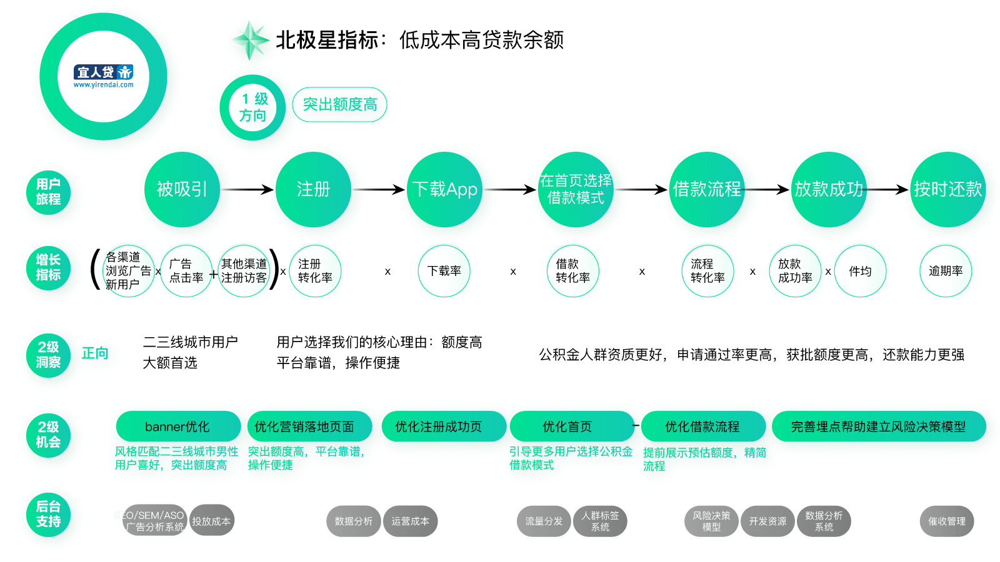
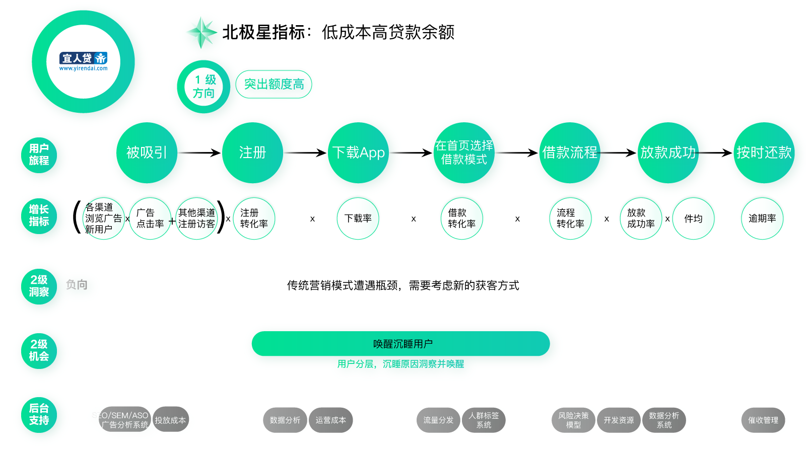
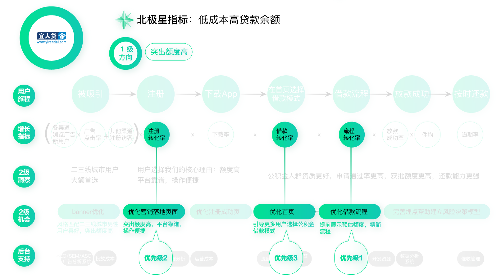
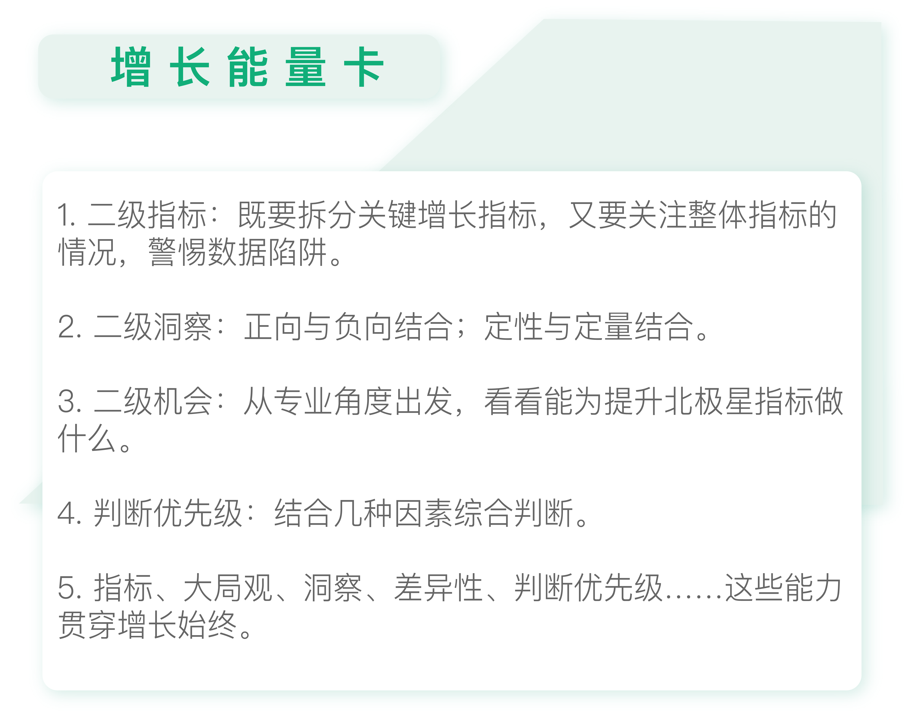

- 00 开篇词 人人都是增长官.md
- 01 预习 增长小白如何“弯道超车”？.md
- 02 预习 如何理解“增长”？.md
- 03 预习 不同职能如何做好增长？.md
- 04 预习 做增长如何处理职能间的矛盾？.md
- 05 正确目标找不对，天天加班也枉然.md
- 06 活学活用北极星指标.md
- 07 OKR如何助力增长？.md
- 08 不懂用户调研？那就对了！.md
- 09 调研目标：在差异性洞察中找到爆破点.md
- 10 数据分析：在“花式对比”中发现玄机.md
- 11 用户分类：围绕北极星指标细分人群.md
- 12 用户访谈：像侦探一样寻找破案线索（上）.md
- 13 用户访谈：像侦探一样寻找破案线索（下）.md
- 14 提炼用户差异，发现增长契机.md
- 15 挖掘产品优势，打破增长瓶颈.md
- 16 定位营销差异，抢占用户心智.md
- 17 一级方向：找到增长爆破点.md
- 18 B端产品如何调研？.md
- 19 全局规划增长机会.md
- 20 统筹全局的用户增长地图.md
- 21 案例解析：定义关键增长指标.md
- 22 正负双向洞察，找准切入点.md
- 23 二级机会：制定增长策略.md
- 24 为一家濒临破产的公司制定增长策略（上）.md
- 25 为一家濒临破产的公司制定增长策略（中）.md
- 26 为一家濒临破产的公司制定增长策略（下）.md
- 27 为什么指标数据怎么优化都不提升？.md
- 28 案例解析：打造增长闭环（上）.md
- 29 案例解析：打造增长闭环（下）.md
- 30 案例解析：唤醒沉睡用户（上）.md
- 31 案例解析：唤醒沉睡用户（下）.md
- 32 没有分解，就无缘增长.md
- 33 四个要点颠覆传统需求文档.md
- 34 三级落地：无限场景应用.md
- 35 手把手教你设计一次成功的实验（上）.md
- 36 手把手教你设计一次成功的实验（下）.md
- 37 积少可成多，别针换别墅.md
- 38 四级延续：增长组件库案例.md
- 39 以用户为中心增长.md
- 增长导航图 增长专栏的知识架构是怎样的？.md
- 尾声 结束意味着新的开始.md
- 预习答疑 你需要一张思维导图吗？.md
23 二级机会：制定增长策略
你好，我是刘津。
在前面两讲中，我们学习了如何通过用户增长地图明确关键增长指标，以及如何借助二级用户洞察发现对应的二级机会。这些内容表面看起来并不难，但在实际的使用过程中，还是很容易出现问题的，我们今天来一一剖析清楚。
警惕数据陷阱
首先，不要独立地看待增长指标，要警惕数据陷阱。
举个例子，你为了提升banner的点击率，使用了抓人眼球的标语，结果点击率确实高了很多。但是用户点进去之后发现上当了，结果在下一步的转化率又大幅降低了。所以，如果独立地看某个指标的好坏是没有意义的，我们必须看整体的数据情况，看某个指标的调整是否真的对最终的北极星指标的提升起到了好的作用。
再举个比较复杂的例子，某借款产品通过优化流程、缩减不必要的步骤提升了借款转化率，表面上看促进了业绩的提升。但经过一段时间，却发现逾期率提升了。后来风险的同学建议增加借款门槛来降低逾期率。
这让我想到了一个心理学方面的发现，大体意思是：你在某方面付出的时间和精力越多，放弃成本就越高（沉没成本）。
所以，有的公司会故意设立很多轮面试，来提升候选人接受offer的概率。假设你面试了十轮才拿到一个offer，你自然会格外珍惜，就算不想去也要好好考量一下。借款也是这样，骗贷的人往往没有太多耐心，而真心实意想借款的老实人往往不太在意繁琐的步骤。
类似的案例还有很多很多，这些故事告诉我们，评估一件事情的好坏，要从整体角度去看，而不是只看局部细节。数据也是这样，拆分指标有助于我们落地执行，但并不意味着是把整体工作完全割裂开，最终还是要看整体指标的情况。
得出完整的二级洞察
在上一讲我详细介绍了正向二级洞察和负向二级洞察。这两者都非常重要，正向帮助我们稳固核心优势脱颖而出；负向帮助我们改进现有问题避免拖产品后腿。
传统思维一般来说更倾向于负向，也就是改进现有问题。但是如果产品核心优势没有巩固，改进再多问题也依旧平庸。
以我在宜人贷的工作为例：一开始我们先从正向入手，明确目标用户人群及产品定位：二三线城市用户大额首选；产品的核心价值：额度高、平台靠谱、操作便捷。这些都是我们通过之前的调研洞察得到的结论。

接下来，我们需要考虑如何差异化地推荐用户内容、引导用户借款，以提升“低成本高贷款余额”这个北极星指标。通过数据分析，我们发现公积金产品模式的用户风险表现最好、逾期率最低、放贷金额最高，所以公积金人群是我们的最优质用户。对应的，我们可以在一些重要的页面，比如产品首页上突出公积金产品的优势，吸引这部分人群。
看完正向，我们再看看负向。
随着获客成本越来越高，一味地通过优化功能、内容、视觉来提升转化也逐渐于事无补，我们更需要从根源解决获客成本高的问题。宜人贷经过多年的运营，积累了千万级的注册用户，而其中成功放款的用户只占一小部分。如果能唤醒这些沉睡用户，岂不是性价比更高吗？

这个洞察主要来源于数据分析及内部沟通，我们最早是从一位数据分析师那里了解到的，他通过专家视角给出了很好的洞察。后来我们成立了“唤醒沉睡用户”的项目组，并且取得了很好的成绩。
找到“力所能及”的二级机会
明确了洞察，我们就可以由此得到二级机会。不过这里有一点需要特别注意：这里的二级机会不是所有的二级机会，而是从你的专业角度出发，看看能为北极星指标贡献什么。
比如从设计的角度看，可以结合洞察，通过优化营销落地页、首页、流程体验等二级机会提升关键指标；从运营的角度看，可以通过优化渠道、活动、裂变营销等方式提升关键指标；从产品经理的角度看，可以通过完善功能、体验优化等方式提升关键指标……
很多人误以为二级指标就是把北极星指标拆成自己的工作指标。举个例子，设计师可能以为这个过程是把北极星指标拆解成设计指标；其实正确的观点应该是：从设计角度看，我们能为提升北极星指标做什么。
这样，我们既能立足自己擅长的部分，又能跳出固有的职能范围，为整体利益贡献更多。
这也验证了之前所说的：任何职能都可以做增长，同时不抢别人的“饭碗”。
排列二级机会的优先级
二级机会确定后，还需要排列优先级。毕竟做增长是一种“四两拨千斤”的能力，也就是要从千头万绪中找到最关键的核心问题，通过解决核心问题创造最大价值。可以说判断优先级的能力贯穿做增长的始终。
怎么判断优先级呢？这里提供几个思路供你参考。
首先，通过增长公式计算。
比如，北极星指标月付费活跃用户数=网站访问量_试用注册率_试用购买率+已有用户付费数_付费用户活跃比例=10000_50%_30%+2000_80%。优先提升哪个指标，提升到什么程度最有利于北极星指标提升呢？把拟定的数字代入公式计算就可以得到答案。这样优先级高的指标下对应的二级机会优先级自然也高。
其次，按重要程度细分。
我们可以按照渠道、用户类型、业务线等因素绘制不同的用户增长地图，然后区分它们之间的优先级。比如不同渠道的用户，后续转化及付费效果可能截然不同，用户旅程及对应的二级洞察、二级机会也会不同。可以按照效果为不同渠道区分优先级并绘制对应的用户增长地图，这样优先级高的渠道的二级机会自然也就排在前面了。
再次，根据产品阶段判断。
在产品早期，一般先关注和留存相关的指标，然后再关注获客。因为产品如果体验不好、价值不明显，用户来了留不住。在这种情况下贸然获客，用户来的越多走的也越多，效果自然是不好的。尤其是现在获客成本变得越来越高，就更需要慎重。到了产品中后期，产品价值及体验已经经过了市场的验证，这个时候就可以加大力度获客。
最后，根据实验成本判断。
在若干二级机会中，一方面我们要考虑最容易提升北极星指标的机会，另一方面也要考虑成本。如果其中一个二级机会只要一天就能完成，但是另一个二级机会要开发一年。那么即使后者的效果比前者可能好一倍，我们肯定也不会优先考虑它。
在实际工作中，往往要几种因素结合来看。

比如在宜人贷早期的用户增长地图中，设计团队决定先优化借款流程，保证用户来了以后使用顺畅；然后再优化H5营销落地页、产品介绍H5页面，最后优化App首页和其它页面。这是因为优化H5成本低、见效快；而App要考虑发版时间，相对来说麻烦很多。所以可以先优化H5，在实验的过程中发现规律，然后再把规律复用到App页面上，让App的提升一步到位。

思考题
请继续完善你的用户增长地图，为你的二级机会排列优先级并说明理由。或者你也可以用“四两拨千斤”的思路试着把手头的工作重新安排一下，定出合适的优先级来。
欢迎把你的思考和疑问通过留言分享出来，与我和其他同学一起讨论。如果你觉得有所收获，也欢迎把文章分享给你的朋友。
© 2019 - 2023 Liangliang Lee. Powered by gin and hexo-theme-book.